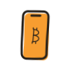

Every path on this site eventually says the same thing: get a few sats and use them. Boost a podcast, pay a friend back, feel Bitcoin move at the speed of a text message. This is the guide to the wallet we recommend for exactly that first step: Zeus, a free, open-source, Bitcoin-only wallet for your phone that speaks the Lightning Network natively, on iOS and Android.
Why Zeus

Plenty of apps will send a Lightning payment. Zeus earns its place here because it checks every box we care about, and one more that most wallets miss:
- Bitcoin-only. No altcoins, no token casino, no distractions. One asset, done properly.
- Open source. The whole wallet is public code (AGPL licensed) that anyone can read, audit, and build.
- No accounts, no KYC. Download it and use it. Nobody asks your name.
- It grows with you. This is the special part. Zeus starts as a simple pocket-money wallet and can end, years later, as the remote control for a Lightning node running in your basement. You never have to switch apps to level up. That is our whole philosophy, start free and build security in step with your skills, shipped as software.
One Wallet, Three Gears

Zeus can run in three modes, and they map neatly onto a Bitcoiner's journey. Being honest about the tradeoffs of each is what separates a good wallet from a slick one.
- First gear: ecash, for pocket change. Out of the box, Zeus can hold small amounts as Cashu ecash: instant, private, and working within seconds of installing, with no setup cost at all. The honest tradeoff: ecash is custodial. A server called a mint holds the actual sats, and a dishonest or failed mint can lose them. Treat this gear like the change in your literal pocket or a loaded coffee card: perfect for boosts and small payments, never for savings.
- Second gear: a node in your phone. Flip it on and Zeus runs a real, lightweight Lightning node on your device. Now the keys live with you and no custodian can touch your funds. This is self-custody on Lightning, and it is the gear to shift into once your balance stops feeling like pocket change.
- Third gear: your own node at home. Zeus began life as a remote control for node runners, and it remains the best one: connect it to your own Bitcoin node and your phone becomes a window onto infrastructure you fully own. This is the graduation ceremony.
Your First Five Minutes

- Download from an official source only: the Apple App Store, Google Play, or F-Droid, linked from zeusln.com. Never sideload a wallet from a link someone sent you.
- Create your wallet and write down the seed phrase on paper the moment Zeus shows it to you. Phones fall in lakes. The seed is the wallet; the app is just its face. (The full ritual lives in our backup guide.)
- Get your first sats. The best way is the human way: ask at a meetup and someone will happily send your first hundred sats to see the look on your face. Otherwise, any exchange withdrawal over Lightning works.
- Claim a Lightning address. Zeus gives you a human-readable address (yourname@zeuspay.com) that works like email for money. Hand it out; payments find you.
- Spend some. Seriously. Boost one #40HPW episode. The first time value moves from your thumb to a creator's pocket with no bank in between, Bitcoin stops being an abstraction.
When You Shift Up: Channels in Plain English
Second gear introduces the one Lightning concept worth actually understanding: the channel. Lightning payments travel through funded connections between nodes. Think of your channel as a glass of water: spending pours water out and makes room to receive; receiving fills it back up. The glass itself has to be created once, with a real Bitcoin transaction.
Zeus handles that creation for you through a liquidity provider: your first deposit arrives, a channel opens automatically, and a one-time setup fee is deducted to cover the on-chain transaction that built your glass. A custodial app hides this cost by quietly owning your money; Zeus charges it openly and hands you the keys. Two practical tips follow. Shift to second gear with a meaningful first deposit (tens of dollars, not two), so the setup fee stays a small fraction. And keep the channel working: a glass you pour from and refill beats a dusty shelf of tiny ones.
The Rules That Keep You Safe
- Ecash is spending money. Small amounts only, and shift to second gear when the balance starts to matter. Zeus itself will nudge you; listen to it.
- The seed phrase never goes digital. Paper, then verified. No screenshots, no cloud notes, and nobody legitimate will ever ask for it.
- A phone wallet is a hot wallet. Even self-custodial, it lives on an internet-connected device. Pocket money and spending flow live here; savings belong in cold storage behind a signing device.
- Verify before you trust. Official downloads, and confirm receive details on the screen before sharing them. The sending and receiving guide covers the habits.
Put it to work today. This wallet is rung one of the Build ladder: load it with a few dollars of sats, pick a show on #40HPW, and boost an episode you liked. Five minutes, and you are using Bitcoin the way it was meant to be used.
Keep going. Understand what you just did in Using Bitcoin as Money, plan your graduation to third gear with the node guide, and bring your phone to a meetup; first sats are our favourite thing to send.
Limestone City Bitcoin is not affiliated with Zeus or ZeusLN. This guide is educational and is not financial advice.